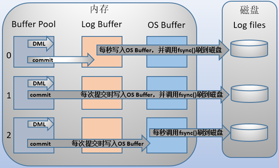
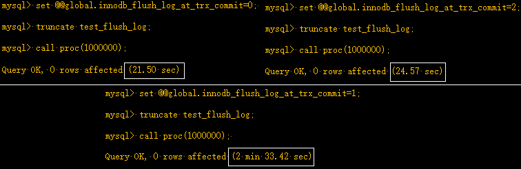
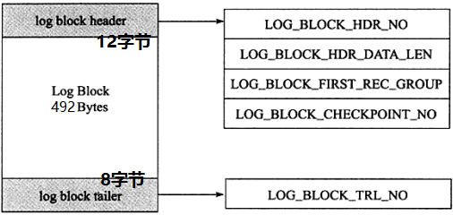
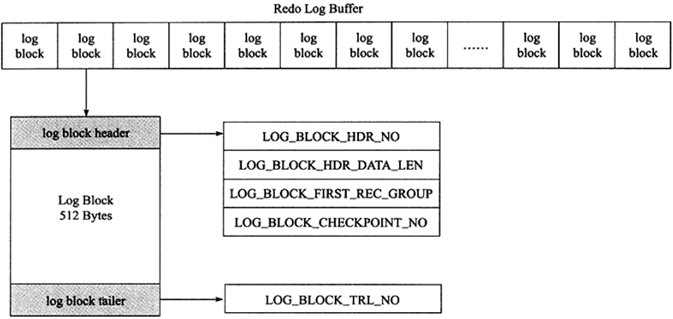
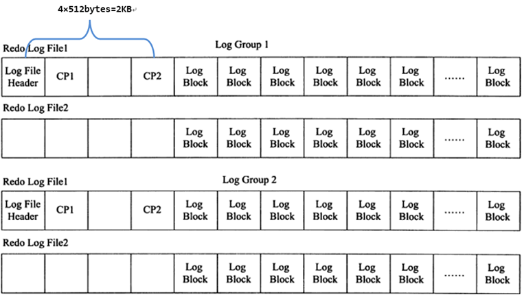
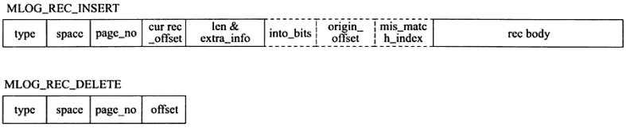
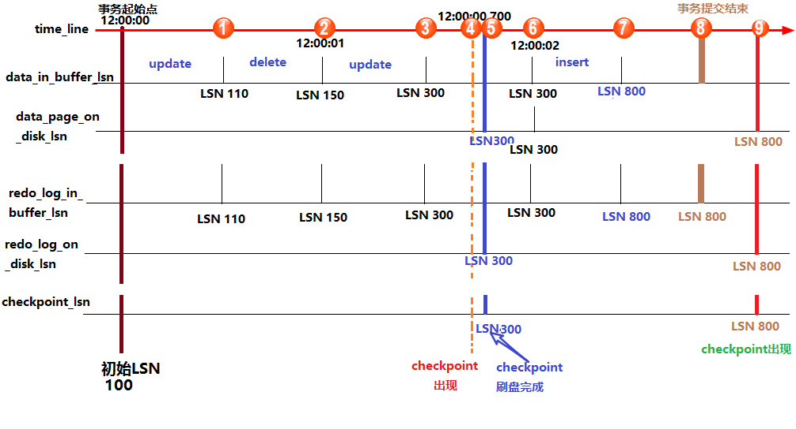
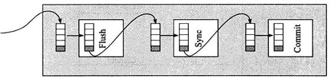

- AQS 万字图文全面解析.md.html
- Docker 镜像构建原理及源码分析.md.html
- ElasticSearch 小白从入门到精通.md.html
- JVM CPU Profiler技术原理及源码深度解析.md.html
- JVM 垃圾收集器.md.html
- JVM 面试的 30 个知识点.md.html
- Java IO 体系、线程模型大总结.md.html
- Java NIO浅析.md.html
- Java 面试题集锦（网络篇）.md.html
- Java-直接内存 DirectMemory 详解.md.html
- Java中9种常见的CMS GC问题分析与解决（上）.md.html
- Java中9种常见的CMS GC问题分析与解决（下）.md.html
- Java中的SPI.md.html
- Java中的ThreadLocal.md.html
- Java线程池实现原理及其在美团业务中的实践.md.html
- Java魔法类：Unsafe应用解析.md.html
- Kafka 源码阅读笔记.md.html
- Kafka、ActiveMQ、RabbitMQ、RocketMQ 区别以及高可用原理.md.html
- MySQL · 引擎特性 · InnoDB Buffer Pool.md.html
- MySQL · 引擎特性 · InnoDB IO子系统.md.html
- MySQL · 引擎特性 · InnoDB 事务系统.md.html
- MySQL · 引擎特性 · InnoDB 同步机制.md.html
- MySQL · 引擎特性 · InnoDB 数据页解析.md.html
- MySQL · 引擎特性 · InnoDB崩溃恢复.md.html
- MySQL · 引擎特性 · 临时表那些事儿.md.html
- MySQL 主从复制 半同步复制.md.html
- MySQL 主从复制 基于GTID复制.md.html
- MySQL 主从复制.md.html
- MySQL 事务日志(redo log和undo log).md.html
- MySQL 亿级别数据迁移实战代码分享.md.html
- MySQL 从一条数据说起-InnoDB行存储数据结构.md.html
- MySQL 地基基础：事务和锁的面纱.md.html
- MySQL 地基基础：数据字典.md.html
- MySQL 地基基础：数据库字符集.md.html
- MySQL 性能优化：碎片整理.md.html
- MySQL 故障诊断：一个 ALTER TALBE 执行了很久，你慌不慌？.md.html
- MySQL 故障诊断：如何在日志中轻松定位大事务.md.html
- MySQL 故障诊断：教你快速定位加锁的 SQL.md.html
- MySQL 日志详解.md.html
- MySQL 的半同步是什么？.md.html
- MySQL中的事务和MVCC.md.html
- MySQL事务_事务隔离级别详解.md.html
- MySQL优化：优化 select count().md.html
- MySQL共享锁、排他锁、悲观锁、乐观锁.md.html
- MySQL的MVCC（多版本并发控制）.md.html
- QingStor 对象存储架构设计及最佳实践.md.html
- RocketMQ 面试题集锦.md.html
- SnowFlake 雪花算法生成分布式 ID.md.html
- Spring Boot 2.x 结合 k8s 实现分布式微服务架构.md.html
- Spring Boot 教程：如何开发一个 starter.md.html
- Spring MVC 原理.md.html
- Spring MyBatis和Spring整合的奥秘.md.html
- Spring 帮助你更好的理解Spring循环依赖.md.html
- Spring 循环依赖及解决方式.md.html
- Spring中眼花缭乱的BeanDefinition.md.html
- Vert.x 基础入门.md.html
- eBay 的 Elasticsearch 性能调优实践.md.html
- 不可不说的Java“锁”事.md.html
- 互联网并发限流实战.md.html
- 从ReentrantLock的实现看AQS的原理及应用.md.html
- 从SpringCloud开始，聊微服务架构.md.html
- 全面了解 JDK 线程池实现原理.md.html
- 分布式一致性理论与算法.md.html
- 分布式一致性算法 Raft.md.html
- 分布式唯一 ID 解析.md.html
- 分布式链路追踪：集群管理设计.md.html
- 动态代理种类及原理，你知道多少？.md.html
- 响应式架构与 RxJava 在有赞零售的实践.md.html
- 大数据算法——布隆过滤器.md.html
- 如何优雅地记录操作日志？.md.html
- 如何设计一个亿级消息量的 IM 系统.md.html
- 异步网络模型.md.html
- 当我们在讨论CQRS时，我们在讨论些神马？.md.html
- 彻底理解 MySQL 的索引机制.md.html
- 最全的 116 道 Redis 面试题解答.md.html
- 有赞权限系统(SAM).md.html
- 有赞零售中台建设方法的探索与实践.md.html
- 服务注册与发现原理剖析（Eureka、Zookeeper、Nacos）.md.html
- 深入浅出Cache.md.html
- 深入理解 MySQL 底层实现.md.html
- 漫画讲解 git rebase VS git merge.md.html
- 生成浏览器唯一稳定 ID 的探索.md.html
- 缓存 如何保证缓存与数据库的双写一致性？.md.html
- 网易严选怎么做全链路监控的？.md.html
- 美团万亿级 KV 存储架构与实践.md.html
- 美团点评Kubernetes集群管理实践.md.html
- 美团百亿规模API网关服务Shepherd的设计与实现.md.html
- 解读《阿里巴巴 Java 开发手册》背后的思考.md.html
- 认识 MySQL 和 Redis 的数据一致性问题.md.html
- 进阶：Dockerfile 高阶使用指南及镜像优化.md.html
- 铁总在用的高性能分布式缓存计算框架 Geode.md.html
- 阿里云PolarDB及其共享存储PolarFS技术实现分析（上）.md.html
- 阿里云PolarDB及其共享存储PolarFS技术实现分析（下）.md.html
- 面试最常被问的 Java 后端题.md.html
- 领域驱动设计在互联网业务开发中的实践.md.html
- 领域驱动设计的菱形对称架构.md.html
- 高效构建 Docker 镜像的最佳实践.md.html
MySQL 事务日志(redo log和undo log)
innodb事务日志包括redo log和undo log。redo log是重做日志，提供前滚操作，undo log是回滚日志，提供回滚操作。
undo log不是redo log的逆向过程，其实它们都算是用来恢复的日志： 1.redo log通常是物理日志，记录的是数据页的物理修改，而不是某一行或某几行修改成怎样怎样，它用来恢复提交后的物理数据页(恢复数据页，且只能恢复到最后一次提交的位置)。 2.undo用来回滚行记录到某个版本。undo log一般是逻辑日志，根据每行记录进行记录。
1.redo log
1.1 redo log和二进制日志的区别
二进制日志相关内容，参考：MariaDB/MySQL的二进制日志。
redo log不是二进制日志。虽然二进制日志中也记录了innodb表的很多操作，**也能实现重做的功能，**但是它们之间有很大区别。
- 二进制日志是在存储引擎的上层产生的，不管是什么存储引擎，对数据库进行了修改都会产生二进制日志。而redo log是innodb层产生的，只记录该存储引擎中表的修改。并且二进制日志先于redo log被记录。具体的见后文group commit小结。
- 二进制日志记录操作的方法是逻辑性的语句。即便它是基于行格式的记录方式，其本质也还是逻辑的SQL设置，如该行记录的每列的值是多少。而redo log是在物理格式上的日志，它记录的是数据库中每个页的修改。
- 二进制日志只在每次事务提交的时候一次性写入缓存中的日志"文件"(对于非事务表的操作，则是每次执行语句成功后就直接写入)。而redo log在数据准备修改前写入缓存中的redo log中，然后才对缓存中的数据执行修改操作；而且保证在发出事务提交指令时，先向缓存中的redo log写入日志，写入完成后才执行提交动作。
- 因为二进制日志只在提交的时候一次性写入，所以二进制日志中的记录方式和提交顺序有关，且一次提交对应一次记录。而redo log中是记录的物理页的修改，redo log文件中同一个事务可能多次记录，最后一个提交的事务记录会覆盖所有未提交的事务记录。例如事务T1，可能在redo log中记录了 T1-1,T1-2,T1-3，T1* 共4个操作，其中 T1* 表示最后提交时的日志记录，所以对应的数据页最终状态是 T1* 对应的操作结果。而且redo log是并发写入的，不同事务之间的不同版本的记录会穿插写入到redo log文件中，例如可能redo log的记录方式如下： T1-1,T1-2,T2-1,T2-2,T2*,T1-3,T1* 。
- 事务日志记录的是物理页的情况，它具有幂等性，因此记录日志的方式极其简练。幂等性的意思是多次操作前后状态是一样的，例如新插入一行后又删除该行，前后状态没有变化。而二进制日志记录的是所有影响数据的操作，记录的内容较多。例如插入一行记录一次，删除该行又记录一次。
1.2 redo log的基本概念
redo log包括两部分：一是内存中的日志缓冲(redo log buffer)，该部分日志是易失性的；二是磁盘上的重做日志文件(redo log file)，该部分日志是持久的。
在概念上，innodb通过force log at commit机制实现事务的持久性，即在事务提交的时候，必须先将该事务的所有事务日志写入到磁盘上的redo log file和undo log file中进行持久化。
为了确保每次日志都能写入到事务日志文件中，在每次将log buffer中的日志写入日志文件的过程中都会调用一次操作系统的fsync操作(即fsync()系统调用)。因为MariaDB/MySQL是工作在用户空间的，MariaDB/MySQL的log buffer处于用户空间的内存中。要写入到磁盘上的log file中(redo:ib_logfileN文件,undo:share tablespace或.ibd文件)，中间还要经过操作系统内核空间的os buffer，调用fsync()的作用就是将OS buffer中的日志刷到磁盘上的log file中。
也就是说，从redo log buffer写日志到磁盘的redo log file中，过程如下：

在此处需要注意一点，一般所说的log file并不是磁盘上的物理日志文件，而是操作系统缓存中的log file，官方手册上的意思也是如此(例如：With a value of 2, the contents of the InnoDB log buffer are written to the log file after each transaction commit and the log file is flushed to disk approximately once per second)。但说实话，这不太好理解，既然都称为file了，应该已经属于物理文件了。所以在本文后续内容中都以os buffer或者file system buffer来表示官方手册中所说的Log file，然后log file则表示磁盘上的物理日志文件，即log file on disk。
另外，之所以要经过一层os buffer，是因为open日志文件的时候，open没有使用O_DIRECT标志位，该标志位意味着绕过操作系统层的os buffer，IO直写到底层存储设备。不使用该标志位意味着将日志进行缓冲，缓冲到了一定容量，或者显式fsync()才会将缓冲中的刷到存储设备。使用该标志位意味着每次都要发起系统调用。比如写abcde，不使用o_direct将只发起一次系统调用，使用o_object将发起5次系统调用。
MySQL支持用户自定义在commit时如何将log buffer中的日志刷log file中。这种控制通过变量 innodb_flush_log_at_trx_commit 的值来决定。该变量有3种值：0、1、2，默认为1。但注意，这个变量只是控制commit动作是否刷新log buffer到磁盘。
- 当设置为1的时候，事务每次提交都会将log buffer中的日志写入os buffer并调用fsync()刷到log file on disk中。这种方式即使系统崩溃也不会丢失任何数据，但是因为每次提交都写入磁盘，IO的性能较差。
- 当设置为0的时候，事务提交时不会将log buffer中日志写入到os buffer，而是每秒写入os buffer并调用fsync()写入到log file on disk中。也就是说设置为0时是(大约)每秒刷新写入到磁盘中的，当系统崩溃，会丢失1秒钟的数据。
- 当设置为2的时候，每次提交都仅写入到os buffer，然后是每秒调用fsync()将os buffer中的日志写入到log file on disk。

注意，有一个变量 innodb_flush_log_at_timeout 的值为1秒，该变量表示的是刷日志的频率，很多人误以为是控制 innodb_flush_log_at_trx_commit 值为0和2时的1秒频率，实际上并非如此。测试时将频率设置为5和设置为1，当 innodb_flush_log_at_trx_commit 设置为0和2的时候性能基本都是不变的。关于这个频率是控制什么的，在后面的"刷日志到磁盘的规则"中会说。
在主从复制结构中，要保证事务的持久性和一致性，需要对日志相关变量设置为如下：
- 如果启用了二进制日志，则设置sync_binlog=1，即每提交一次事务同步写到磁盘中。
- 总是设置innodb_flush_log_at_trx_commit=1，即每提交一次事务都写到磁盘中。
上述两项变量的设置保证了：每次提交事务都写入二进制日志和事务日志，并在提交时将它们刷新到磁盘中。
选择刷日志的时间会严重影响数据修改时的性能，特别是刷到磁盘的过程。下例就测试了 innodb_flush_log_at_trx_commit 分别为0、1、2时的差距。
#创建测试表
drop table if exists test_flush_log;
create table test_flush_log(id int,name char(50))engine=innodb;
#创建插入指定行数的记录到测试表中的存储过程
drop procedure if exists proc;
delimiter $$
create procedure proc(i int)
begin
declare s int default 1;
declare c char(50) default repeat('a',50);
while s<=i do
start transaction;
insert into test_flush_log values(null,c);
commit;
set s=s+1;
end while;
end$$
delimiter ;
当前环境下， innodb_flush_log_at_trx_commit 的值为1，即每次提交都刷日志到磁盘。测试此时插入10W条记录的时间。
mysql> call proc(100000);
Query OK, 0 rows affected (15.48 sec)
结果是15.48秒。
再测试值为2的时候，即每次提交都刷新到os buffer，但每秒才刷入磁盘中。
mysql> set @@global.innodb_flush_log_at_trx_commit=2;
mysql> truncate test_flush_log;
mysql> call proc(100000);
Query OK, 0 rows affected (3.41 sec)
结果插入时间大减，只需3.41秒。
最后测试值为0的时候，即每秒才刷到os buffer和磁盘。
mysql> set @@global.innodb_flush_log_at_trx_commit=0;
mysql> truncate test_flush_log;
mysql> call proc(100000);
Query OK, 0 rows affected (2.10 sec)
结果只有2.10秒。
最后可以发现，其实值为2和0的时候，它们的差距并不太大，但2却比0要安全的多。它们都是每秒从os buffer刷到磁盘，它们之间的时间差体现在log buffer刷到os buffer上。因为将log buffer中的日志刷新到os buffer只是内存数据的转移，并没有太大的开销，所以每次提交和每秒刷入差距并不大。可以测试插入更多的数据来比较，以下是插入100W行数据的情况。从结果可见，值为2和0的时候差距并不大，但值为1的性能却差太多。

尽管设置为0和2可以大幅度提升插入性能，但是在故障的时候可能会丢失1秒钟数据，这1秒钟很可能有大量的数据，从上面的测试结果看，100W条记录也只消耗了20多秒，1秒钟大约有4W-5W条数据，尽管上述插入的数据简单，但却说明了数据丢失的大量性。更好的插入数据的做法是将值设置为1**，然后修改存储过程，将每次循环都提交修改为只提交一次**，**这样既能保证数据的一致性，也能提升性能，修改如下：
drop procedure if exists proc;
delimiter $$
create procedure proc(i int)
begin
declare s int default 1;
declare c char(50) default repeat('a',50);
start transaction;
while s<=i DO
insert into test_flush_log values(null,c);
set s=s+1;
end while;
commit;
end$$
delimiter ;
测试值为1时的情况。
mysql> set @@global.innodb_flush_log_at_trx_commit=1;
mysql> truncate test_flush_log;
mysql> call proc(1000000);
Query OK, 0 rows affected (11.26 sec)
1.3 日志块(log block)
innodb存储引擎中，redo log以块为单位进行存储的，每个块占512字节，这称为redo log block。所以不管是log buffer中还是os buffer中以及redo log file on disk中，都是这样以512字节的块存储的。
每个redo log block由3部分组成：日志块头、日志块尾和日志主体。其中日志块头占用12字节，日志块尾占用8字节，所以每个redo log block的日志主体部分只有512-12-8=492字节。

因为redo log记录的是数据页的变化，当一个数据页产生的变化需要使用超过492字节()的redo log来记录，那么就会使用多个redo log block来记录该数据页的变化。
日志块头包含4部分：
- log_block_hdr_no：(4字节)该日志块在redo log buffer中的位置ID。
- log_block_hdr_data_len：(2字节)该log block中已记录的log大小。写满该log block时为0x200，表示512字节。
- log_block_first_rec_group：(2字节)该log block中第一个log的开始偏移位置。
- lock_block_checkpoint_no：(4字节)写入检查点信息的位置。
关于log block块头的第三部分 log_block_first_rec_group ，因为有时候一个数据页产生的日志量超出了一个日志块，这是需要用多个日志块来记录该页的相关日志。例如，某一数据页产生了552字节的日志量，那么需要占用两个日志块，第一个日志块占用492字节，第二个日志块需要占用60个字节，那么对于第二个日志块来说，它的第一个log的开始位置就是73字节(60+12)。如果该部分的值和 log_block_hdr_data_len 相等，则说明该log block中没有新开始的日志块，即表示该日志块用来延续前一个日志块。
日志尾只有一个部分： log_block_trl_no ，该值和块头的 log_block_hdr_no 相等。
上面所说的是一个日志块的内容，在redo log buffer或者redo log file on disk中，由很多log block组成。如下图：

1.4 log group和redo log file
log group表示的是redo log group，一个组内由多个大小完全相同的redo log file组成。组内redo log file的数量由变量 innodb_log_files_group 决定，默认值为2，即两个redo log file。这个组是一个逻辑的概念，并没有真正的文件来表示这是一个组，但是可以通过变量 innodb_log_group_home_dir 来定义组的目录，redo log file都放在这个目录下，默认是在datadir下。
mysql> show global variables like "innodb_log%";
+-----------------------------+----------+
| Variable_name | Value |
+-----------------------------+----------+
| innodb_log_buffer_size | 8388608 |
| innodb_log_compressed_pages | ON |
| innodb_log_file_size | 50331648 |
| innodb_log_files_in_group | 2 |
| innodb_log_group_home_dir | ./ |
+-----------------------------+----------+
[[email protected] data]# ll /mydata/data/ib*
-rw-rw---- 1 mysql mysql 79691776 Mar 30 23:12 /mydata/data/ibdata1
-rw-rw---- 1 mysql mysql 50331648 Mar 30 23:12 /mydata/data/ib_logfile0
-rw-rw---- 1 mysql mysql 50331648 Mar 30 23:12 /mydata/data/ib_logfile1
可以看到在默认的数据目录下，有两个ib_logfile开头的文件，它们就是log group中的redo log file，而且它们的大小完全一致且等于变量 innodb_log_file_size 定义的值。第一个文件ibdata1是在没有开启 innodb_file_per_table 时的共享表空间文件，对应于开启 innodb_file_per_table 时的.ibd文件。
在innodb将log buffer中的redo log block刷到这些log file中时，会以追加写入的方式循环轮训写入。即先在第一个log file（即ib_logfile0）的尾部追加写，直到满了之后向第二个log file（即ib_logfile1）写。当第二个log file满了会清空一部分第一个log file继续写入。
由于是将log buffer中的日志刷到log file，所以在log file中记录日志的方式也是log block的方式。
在每个组的第一个redo log file中，前2KB记录4个特定的部分，从2KB之后才开始记录log block。除了第一个redo log file中会记录，log group中的其他log file不会记录这2KB，但是却会腾出这2KB的空间。如下：

redo log file的大小对innodb的性能影响非常大，设置的太大，恢复的时候就会时间较长，设置的太小，就会导致在写redo log的时候循环切换redo log file。
1.5 redo log的格式
因为innodb存储引擎存储数据的单元是页(和SQL Server中一样)，所以redo log也是基于页的格式来记录的。默认情况下，innodb的页大小是16KB(由 innodb_page_size 变量控制)，一个页内可以存放非常多的log block(每个512字节)，而log block中记录的又是数据页的变化。
其中log block中492字节的部分是log body，该log body的格式分为4部分：
- redo_log_type：占用1个字节，表示redo log的日志类型。
- space：表示表空间的ID，采用压缩的方式后，占用的空间可能小于4字节。
- page_no：表示页的偏移量，同样是压缩过的。
- redo_log_body表示每个重做日志的数据部分，恢复时会调用相应的函数进行解析。例如insert语句和delete语句写入redo log的内容是不一样的。
如下图，分别是insert和delete大致的记录方式。

1.6 日志刷盘的规则
log buffer中未刷到磁盘的日志称为脏日志(dirty log)。
在上面的说过，默认情况下事务每次提交的时候都会刷事务日志到磁盘中，这是因为变量 innodb_flush_log_at_trx_commit 的值为1。但是innodb不仅仅只会在有commit动作后才会刷日志到磁盘，这只是innodb存储引擎刷日志的规则之一。
刷日志到磁盘有以下几种规则：
1.发出commit动作时。已经说明过，commit发出后是否刷日志由变量 innodb_flush_log_at_trx_commit 控制。
2.每秒刷一次。这个刷日志的频率由变量 innodb_flush_log_at_timeout 值决定，默认是1秒。要注意，这个刷日志频率和commit动作无关。
3.当log buffer中已经使用的内存超过一半时。
4.当有checkpoint时，checkpoint在一定程度上代表了刷到磁盘时日志所处的LSN位置。
1.7 数据页刷盘的规则及checkpoint
内存中(buffer pool)未刷到磁盘的数据称为脏数据(dirty data)。由于数据和日志都以页的形式存在，所以脏页表示脏数据和脏日志。
上一节介绍了日志是何时刷到磁盘的，不仅仅是日志需要刷盘，脏数据页也一样需要刷盘。
**在innodb中，数据刷盘的规则只有一个：checkpoint。但是触发checkpoint的情况却有几种。不管怎样，checkpoint触发后，会将buffer中脏数据页和脏日志页都刷到磁盘。
innodb存储引擎中checkpoint分为两种：
- sharp checkpoint：在重用redo log文件(例如切换日志文件)的时候，将所有已记录到redo log中对应的脏数据刷到磁盘。
- fuzzy checkpoint：一次只刷一小部分的日志到磁盘，而非将所有脏日志刷盘。有以下几种情况会触发该检查点：
- master thread checkpoint：由master线程控制，每秒或每10秒刷入一定比例的脏页到磁盘。
- flush_lru_list checkpoint：从MySQL5.6开始可通过 innodb_page_cleaners 变量指定专门负责脏页刷盘的page cleaner线程的个数，该线程的目的是为了保证lru列表有可用的空闲页。
- async/sync flush checkpoint：同步刷盘还是异步刷盘。例如还有非常多的脏页没刷到磁盘(非常多是多少，有比例控制)，这时候会选择同步刷到磁盘，但这很少出现；如果脏页不是很多，可以选择异步刷到磁盘，如果脏页很少，可以暂时不刷脏页到磁盘
- dirty page too much checkpoint：脏页太多时强制触发检查点，目的是为了保证缓存有足够的空闲空间。too much的比例由变量 innodb_max_dirty_pages_pct 控制，MySQL 5.6默认的值为75，即当脏页占缓冲池的百分之75后，就强制刷一部分脏页到磁盘。
由于刷脏页需要一定的时间来完成，所以记录检查点的位置是在每次刷盘结束之后才在redo log中标记的。
MySQL停止时是否将脏数据和脏日志刷入磁盘，由变量innodb_fast_shutdown={ 0|1|2 }控制，默认值为1，即停止时只做一部分purge，忽略大多数flush操作(但至少会刷日志)，在下次启动的时候再flush剩余的内容，实现fast shutdown。
1.8 LSN超详细分析
LSN称为日志的逻辑序列号(log sequence number)，在innodb存储引擎中，lsn占用8个字节。LSN的值会随着日志的写入而逐渐增大。
根据LSN，可以获取到几个有用的信息：
1.数据页的版本信息。
2.写入的日志总量，通过LSN开始号码和结束号码可以计算出写入的日志量。
3.可知道检查点的位置。
实际上还可以获得很多隐式的信息。
LSN不仅存在于redo log中，还存在于数据页中，在每个数据页的头部，有一个fil_page_lsn记录了当前页最终的LSN值是多少。通过数据页中的LSN值和redo log中的LSN值比较，如果页中的LSN值小于redo log中LSN值，则表示数据丢失了一部分，这时候可以通过redo log的记录来恢复到redo log中记录的LSN值时的状态。
redo log的lsn信息可以通过 show engine innodb status 来查看。MySQL 5.5版本的show结果中只有3条记录，没有pages flushed up to。
mysql> show engine innodb stauts
---
LOG
---
Log sequence number 2225502463
Log flushed up to 2225502463
Pages flushed up to 2225502463
Last checkpoint at 2225502463
0 pending log writes, 0 pending chkp writes
3201299 log i/o's done, 0.00 log i/o's/second
其中：
- log sequence number就是当前的redo log(in buffer)中的lsn；
- log flushed up to是刷到redo log file on disk中的lsn；
- pages flushed up to是已经刷到磁盘数据页上的LSN；
- last checkpoint at是上一次检查点所在位置的LSN。
innodb从执行修改语句开始：
(1).首先修改内存中的数据页，并在数据页中记录LSN，暂且称之为data_in_buffer_lsn；
(2).并且在修改数据页的同时(几乎是同时)向redo log in buffer中写入redo log，并记录下对应的LSN，暂且称之为redo_log_in_buffer_lsn；
(3).写完buffer中的日志后，当触发了日志刷盘的几种规则时，会向redo log file on disk刷入重做日志，并在该文件中记下对应的LSN，暂且称之为redo_log_on_disk_lsn；
(4).数据页不可能永远只停留在内存中，在某些情况下，会触发checkpoint来将内存中的脏页(数据脏页和日志脏页)刷到磁盘，所以会在本次checkpoint脏页刷盘结束时，在redo log中记录checkpoint的LSN位置，暂且称之为checkpoint_lsn。
(5).要记录checkpoint所在位置很快，只需简单的设置一个标志即可，但是刷数据页并不一定很快，例如这一次checkpoint要刷入的数据页非常多。也就是说要刷入所有的数据页需要一定的时间来完成，中途刷入的每个数据页都会记下当前页所在的LSN，暂且称之为data_page_on_disk_lsn。
详细说明如下图：

上图中，从上到下的横线分别代表：时间轴、buffer中数据页中记录的LSN(data_in_buffer_lsn)、磁盘中数据页中记录的LSN(data_page_on_disk_lsn)、buffer中重做日志记录的LSN(redo_log_in_buffer_lsn)、磁盘中重做日志文件中记录的LSN(redo_log_on_disk_lsn)以及检查点记录的LSN(checkpoint_lsn)。
假设在最初时(12:0:00)所有的日志页和数据页都完成了刷盘，也记录好了检查点的LSN，这时它们的LSN都是完全一致的。
假设此时开启了一个事务，并立刻执行了一个update操作，执行完成后，buffer中的数据页和redo log都记录好了更新后的LSN值，假设为110。这时候如果执行 show engine innodb status 查看各LSN的值，即图中①处的位置状态，结果会是：
log sequence number(110) > log flushed up to(100) = pages flushed up to = last checkpoint at
之后又执行了一个delete语句，LSN增长到150。等到12:00:01时，触发redo log刷盘的规则(其中有一个规则是 innodb_flush_log_at_timeout 控制的默认日志刷盘频率为1秒)，这时redo log file on disk中的LSN会更新到和redo log in buffer的LSN一样，所以都等于150，这时 show engine innodb status ，即图中②的位置，结果将会是：
log sequence number(150) = log flushed up to > pages flushed up to(100) = last checkpoint at
再之后，执行了一个update语句，缓存中的LSN将增长到300，即图中③的位置。
假设随后检查点出现，即图中④的位置，正如前面所说，检查点会触发数据页和日志页刷盘，但需要一定的时间来完成，所以在数据页刷盘还未完成时，检查点的LSN还是上一次检查点的LSN，但此时磁盘上数据页和日志页的LSN已经增长了，即：
log sequence number > log flushed up to 和 pages flushed up to > last checkpoint at
但是log flushed up to和pages flushed up to的大小无法确定，因为日志刷盘可能快于数据刷盘，也可能等于，还可能是慢于。但是checkpoint机制有保护数据刷盘速度是慢于日志刷盘的：当数据刷盘速度超过日志刷盘时，将会暂时停止数据刷盘，等待日志刷盘进度超过数据刷盘。
等到数据页和日志页刷盘完毕，即到了位置⑤的时候，所有的LSN都等于300。
随着时间的推移到了12:00:02，即图中位置⑥，又触发了日志刷盘的规则，但此时buffer中的日志LSN和磁盘中的日志LSN是一致的，所以不执行日志刷盘，即此时 show engine innodb status 时各种lsn都相等。
随后执行了一个insert语句，假设buffer中的LSN增长到了800，即图中位置⑦。此时各种LSN的大小和位置①时一样。
随后执行了提交动作，即位置⑧。默认情况下，提交动作会触发日志刷盘，但不会触发数据刷盘，所以 show engine innodb status 的结果是：
log sequence number = log flushed up to > pages flushed up to = last checkpoint at
最后随着时间的推移，检查点再次出现，即图中位置⑨。但是这次检查点不会触发日志刷盘，因为日志的LSN在检查点出现之前已经同步了。假设这次数据刷盘速度极快，快到一瞬间内完成而无法捕捉到状态的变化，这时 show engine innodb status 的结果将是各种LSN相等。
1.9 innodb的恢复行为
在启动innodb的时候，不管上次是正常关闭还是异常关闭，总是会进行恢复操作。
因为redo log记录的是数据页的物理变化，因此恢复的时候速度比逻辑日志(如二进制日志)要快很多。而且，innodb自身也做了一定程度的优化，让恢复速度变得更快。
重启innodb时，checkpoint表示已经完整刷到磁盘上data page上的LSN，因此恢复时仅需要恢复从checkpoint开始的日志部分。例如，当数据库在上一次checkpoint的LSN为10000时宕机，且事务是已经提交过的状态。启动数据库时会检查磁盘中数据页的LSN，如果数据页的LSN小于日志中的LSN，则会从检查点开始恢复。
还有一种情况，在宕机前正处于checkpoint的刷盘过程，且数据页的刷盘进度超过了日志页的刷盘进度。这时候一宕机，数据页中记录的LSN就会大于日志页中的LSN，在重启的恢复过程中会检查到这一情况，这时超出日志进度的部分将不会重做，因为这本身就表示已经做过的事情，无需再重做。
另外，事务日志具有幂等性，所以多次操作得到同一结果的行为在日志中只记录一次。而二进制日志不具有幂等性，多次操作会全部记录下来，在恢复的时候会多次执行二进制日志中的记录，速度就慢得多。例如，某记录中id初始值为2，通过update将值设置为了3，后来又设置成了2，在事务日志中记录的将是无变化的页，根本无需恢复；而二进制会记录下两次update操作，恢复时也将执行这两次update操作，速度比事务日志恢复更慢。
1.10 和redo log有关的几个变量
- innodb_flush_log_at_trx_commit={0|1|2} # 指定何时将事务日志刷到磁盘，默认为1。
- 0表示每秒将"log buffer"同步到"os buffer"且从"os buffer"刷到磁盘日志文件中。
- 1表示每事务提交都将"log buffer"同步到"os buffer"且从"os buffer"刷到磁盘日志文件中。
- 2表示每事务提交都将"log buffer"同步到"os buffer"但每秒才从"os buffer"刷到磁盘日志文件中。
- innodb_log_buffer_size：# log buffer的大小，默认8M
- innodb_log_file_size：#事务日志的大小，默认5M
- innodb_log_files_group =2：# 事务日志组中的事务日志文件个数，默认2个
- innodb_log_group_home_dir =./：# 事务日志组路径，当前目录表示数据目录
- innodb_mirrored_log_groups =1：# 指定事务日志组的镜像组个数，但镜像功能好像是强制关闭的，所以只有一个log group。在MySQL5.7中该变量已经移除。
2.undo log
2.1 基本概念
undo log有两个作用：提供回滚和多个行版本控制(MVCC)。
在数据修改的时候，不仅记录了redo，还记录了相对应的undo，如果因为某些原因导致事务失败或回滚了，可以借助该undo进行回滚。
undo log和redo log记录物理日志不一样，它是逻辑日志。可以认为当delete一条记录时，undo log中会记录一条对应的insert记录，反之亦然，当update一条记录时，它记录一条对应相反的update记录。
当执行rollback时，就可以从undo log中的逻辑记录读取到相应的内容并进行回滚。有时候应用到行版本控制的时候，也是通过undo log来实现的：当读取的某一行被其他事务锁定时，它可以从undo log中分析出该行记录以前的数据是什么，从而提供该行版本信息，让用户实现非锁定一致性读取。
undo log是采用段(segment)的方式来记录的，每个undo操作在记录的时候占用一个undo log segment**。**
另外，undo log也会产生redo log**，因为undo log也要实现持久性保护。
2.2 undo log的存储方式
innodb存储引擎对undo的管理采用段的方式。rollback segment称为回滚段，每个回滚段中有1024个undo log segment。**
在以前老版本，只支持1个rollback segment，这样就只能记录1024个undo log segment。后来MySQL5.5可以支持128个rollback segment，即支持128*1024个undo操作，还可以通过变量 innodb_undo_logs (5.6版本以前该变量是 innodb_rollback_segments )自定义多少个rollback segment，默认值为128。
undo log默认存放在共享表空间中。
[[email protected] data]# ll /mydata/data/ib*
-rw-rw---- 1 mysql mysql 79691776 Mar 31 01:42 /mydata/data/ibdata1
-rw-rw---- 1 mysql mysql 50331648 Mar 31 01:42 /mydata/data/ib_logfile0
-rw-rw---- 1 mysql mysql 50331648 Mar 31 01:42 /mydata/data/ib_logfile1
如果开启了 innodb_file_per_table ，将放在每个表的.ibd文件中。
在MySQL5.6中，undo的存放位置还可以通过变量 innodb_undo_directory 来自定义存放目录，默认值为"."表示datadir。
默认rollback segment全部写在一个文件中，但可以通过设置变量 innodb_undo_tablespaces 平均分配到多少个文件中。该变量默认值为0，即全部写入一个表空间文件。该变量为静态变量，只能在数据库示例停止状态下修改，如写入配置文件或启动时带上对应参数。但是innodb存储引擎在启动过程中提示，不建议修改为非0的值，如下：
2017-03-31 13:16:00 7f665bfab720 InnoDB: Expected to open 3 undo tablespaces but was able
2017-03-31 13:16:00 7f665bfab720 InnoDB: to find only 0 undo tablespaces.
2017-03-31 13:16:00 7f665bfab720 InnoDB: Set the innodb_undo_tablespaces parameter to the
2017-03-31 13:16:00 7f665bfab720 InnoDB: correct value and retry. Suggested value is 0
2.3 和undo log相关的变量
undo相关的变量在MySQL5.6中已经变得很少。如下：它们的意义在上文中已经解释了。
mysql> show variables like "%undo%";
+-------------------------+-------+
| Variable_name | Value |
+-------------------------+-------+
| innodb_undo_directory | . |
| innodb_undo_logs | 128 |
| innodb_undo_tablespaces | 0 |
+-------------------------+-------+
2.4 delete/update操作的内部机制
当事务提交的时候，innodb不会立即删除undo log，因为后续还可能会用到undo log，如隔离级别为repeatable read时，事务读取的都是开启事务时的最新提交行版本，只要该事务不结束，该行版本就不能删除，即undo log不能删除。
但是在事务提交的时候，会将该事务对应的undo log放入到删除列表中，未来通过purge来删除。并且提交事务时，还会判断undo log分配的页是否可以重用，如果可以重用，则会分配给后面来的事务，避免为每个独立的事务分配独立的undo log页而浪费存储空间和性能。
通过undo log记录delete和update操作的结果发现：(insert操作无需分析，就是插入行而已)
- delete操作实际上不会直接删除，而是将delete对象打上delete flag，标记为删除，最终的删除操作是purge线程完成的。
- update分为两种情况：update的列是否是主键列。
- 如果不是主键列，在undo log中直接反向记录是如何update的。即update是直接进行的。
- 如果是主键列，update分两部执行：先删除该行，再插入一行目标行。
3.binlog和事务日志的先后顺序及group commit
提醒：建议看看下面的评论。
为了提高性能，通常会将有关联性的多个数据修改操作放在一个事务中，这样可以避免对每个修改操作都执行完整的持久化操作。这种方式，可以看作是人为的组提交(group commit)。
除了将多个操作组合在一个事务中，记录binlog的操作也可以按组的思想进行优化：将多个事务涉及到的binlog一次性flush，而不是每次flush一个binlog。
事务在提交的时候不仅会记录事务日志，还会记录二进制日志，但是它们谁先记录呢？二进制日志是MySQL的上层日志，先于存储引擎的事务日志被写入。
在MySQL5.6以前，当事务提交(即发出commit指令)后，MySQL接收到该信号进入commit prepare阶段；进入prepare阶段后，立即写内存中的二进制日志，写完内存中的二进制日志后就相当于确定了commit操作；然后开始写内存中的事务日志；最后将二进制日志和事务日志刷盘，它们如何刷盘，分别由变量 sync_binlog 和 innodb_flush_log_at_trx_commit 控制。
但因为要保证二进制日志和事务日志的一致性，在提交后的prepare阶段会启用一个prepare_commit_mutex锁来保证它们的顺序性和一致性。但这样会导致开启二进制日志后group commmit失效，特别是在主从复制结构中，几乎都会开启二进制日志。
在MySQL5.6中进行了改进。提交事务时，在存储引擎层的上一层结构中会将事务按序放入一个队列，队列中的第一个事务称为leader，其他事务称为follower，leader控制着follower的行为。虽然顺序还是一样先刷二进制，再刷事务日志，但是机制完全改变了：删除了原来的prepare_commit_mutex行为，也能保证即使开启了二进制日志，group commit也是有效的。
MySQL5.6中分为3个步骤：flush阶段、sync阶段、commit阶段。

- flush阶段：向内存中写入每个事务的二进制日志。
- sync阶段：将内存中的二进制日志刷盘。若队列中有多个事务，那么仅一次fsync操作就完成了二进制日志的刷盘操作。这在MySQL5.6中称为BLGC(binary log group commit)。
- commit阶段：leader根据顺序调用存储引擎层事务的提交，由于innodb本就支持group commit，所以解决了因为锁 prepare_commit_mutex 而导致的group commit失效问题。
在flush阶段写入二进制日志到内存中，但是不是写完就进入sync阶段的，而是要等待一定的时间，多积累几个事务的binlog一起进入sync阶段，等待时间由变量 binlog_max_flush_queue_time 决定，默认值为0表示不等待直接进入sync，设置该变量为一个大于0的值的好处是group中的事务多了，性能会好一些，但是这样会导致事务的响应时间变慢，所以建议不要修改该变量的值，除非事务量非常多并且不断的在写入和更新。
进入到sync阶段，会将binlog从内存中刷入到磁盘，刷入的数量和单独的二进制日志刷盘一样，由变量 sync_binlog 控制。
当有一组事务在进行commit阶段时，其他新事务可以进行flush阶段，它们本就不会相互阻塞，所以group commit会不断生效。当然，group commit的性能和队列中的事务数量有关，如果每次队列中只有1个事务，那么group commit和单独的commit没什么区别，当队列中事务越来越多时，即提交事务越多越快时，group commit的效果越明显。